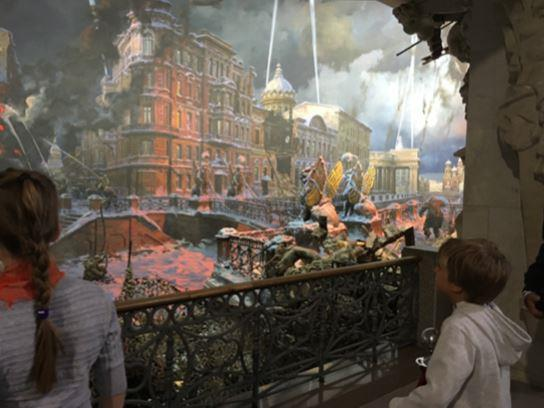
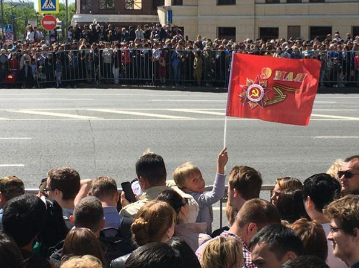
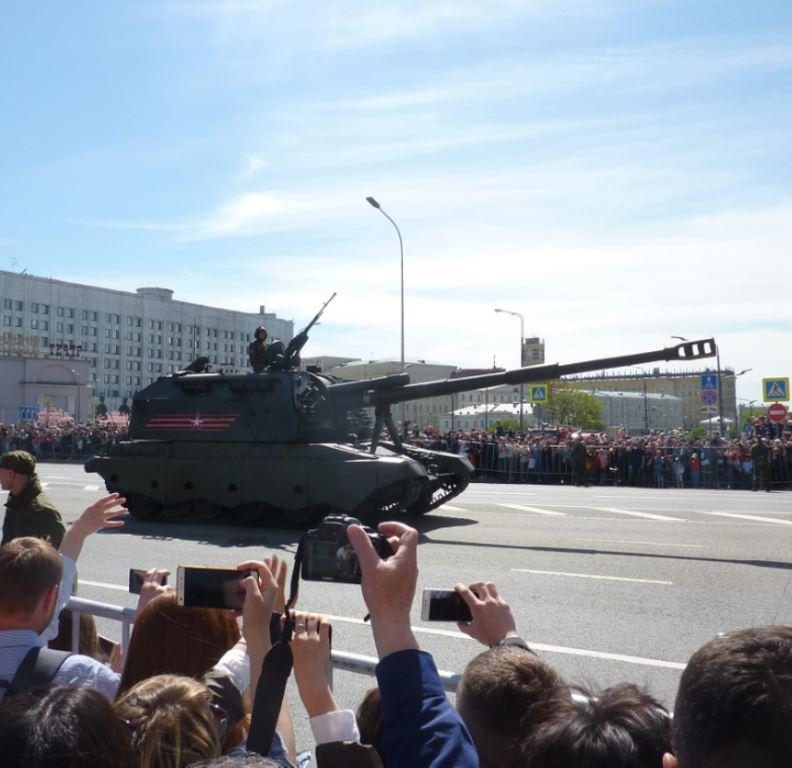
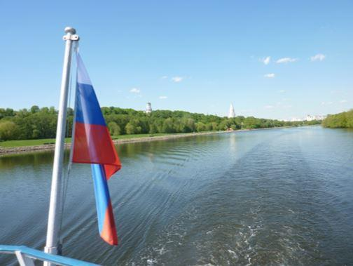
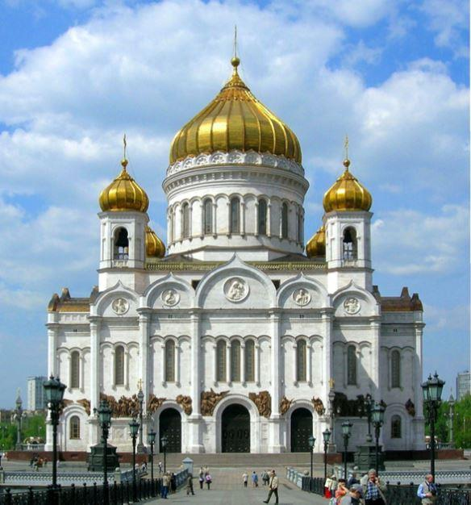
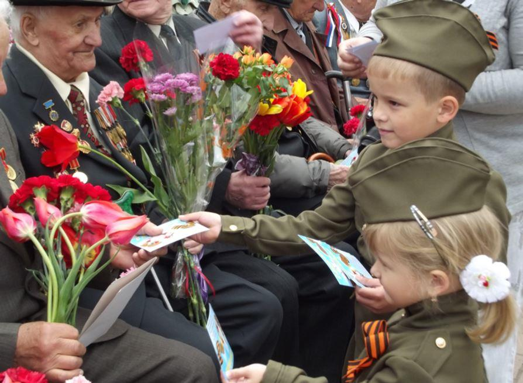
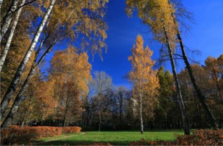

Le rédacteur a eu la chance de pouvoir passer avec sa famille une petite semaine à Moscou, à l’occasion des fêtes du 9 mai.
Le temps d’abord : frais et ensoleillé, une pause bienvenue pour toute la famille pour échapper quelques aux grosses chaleurs du Golfe. Les lilas ensuite, qui commençaient juste à s’ouvrir. Le monde dans les parcs, l’Airbus 380 plein à craquer…
C’est au parc Pobedi que nous avons pour commencer pu assister à la parade des cadets des écoles Souvorov. Tous biens jeunes, comparables aux « infras » de nos collèges militaires, garçons et filles, ces dernières ayant de charmants pompons blancs autour de leurs calots.
Recrutés sur concours, ils suivent une scolarité en internat, avec bien sûr une formation militaire supplémentaire.
(c’est d’ailleurs sur ces activités – tir et démontage de kalachnikovs notamment – qu’insistent lourdement les télévisions européennes qui daignent s’intéresser à eux, oubliant volontairement les études académiques, un peu comme si on ne filmait que l’appel du matin aux prépas polytechniques et navales du Prytanée ou du Lycée Naval de chez nous…)
Et même si les alignements sont parfois approximatifs, l’enthousiasme comme le recueillement sont bien là, devant les parents venus en nombre et parfois de fort loin (la notion de « l’autre bout du pays » n’a pas le même sens que chez nous !) Alors bien sûr professeurs et officiers d’encadrement gardent un œil, passent et repassent dans les rangs – comment pourrait-il en être autrement à quinze ans ? L’excellence militaire viendra plus tard ! Chaque chose en son temps - il est évident que ce sont les prochains partiels de mathématiques qui occupent leurs pensées, à moins que ce ne soit la jolie camarade de classe qui se tient à leurs côtés… et comme partout sur la planète désormais, ceux qui ne sont pas sur les rangs ne lâchent pas ces petits outils du diable aux écrans malins, qui accompagnent et semblent rassurer... Finalement c’est leur absence qui aurait été inquiétante ! La cérémonie avec son lâcher de colombes et l’hymne national sera suivie d’un défilé, véritable Den Pobedi des enfants, avant qu’une partie d’entre eux se rassemble dans la crypte centrale pour une célébration plus intimiste que nous ne verrons que par une porte entrouverte.
Nous en aurons profité pour visiter le monument de la Victoire une fois la parade terminée : relativement récent (terminé en 1995) il ne peut laisser indifférent, avec ses dioramas originaux et prenants (celui du siège de Leningrad est le plus réussi) ses reliques, ses restitutions des combats de Berlin, sa salle des marbres... Prévoyez un temps suffisant pour en parcourir toutes les galeries, et n’oubliez pas le parc et ses trophées.
Après deux jours de tourisme fluvial et champêtre (je recommande le parc Kolomenskoïe pour une journée de verdure et ses églises cachées mais bien vivantes) viendra le moment de se mettre en place pour la grande journée du 9 mai. Le métro à une heure matinale, de bonnes chaussures pour tout le monde, les rubans de St-George sous différentes formes, caméras diverses à poste, et nous sommes lancés. Il est bien évident pour commencer que la place Rouge n’est pas accessible au commun des mortels dont nous faisons partie… À défaut donc de profiter de l’action principale, il faudra choisir (comme à Paris pour le 14 juillet !) entre l’avant ou l’après-défilé.
Avant il y a de la tension et du recueillement, on peut observer troupes et véhicules à l’arrêt, jusqu’au moment où « c’est parti ! » et après - il y a de la détente de l’air, une fois que la mission est remplie.
Une étude d’objectif entreprise bien avant nous aura fait croire que la rue Tverskaya allait être l’endroit magique pour observer les colonnes motorisées avant le départ de celles-ci.
Mais si en France il est possible de parcourir tôt le matin les avenues de la place de l’Etoile pour sentir un peu l’ambiance des détachements motorisés, nous découvrirons vite qu’il n’en est rien ici : la rue en question qui conduit à la place rouge est bloquée … disons à 97 % - certaines personnes (du coin ? avec enfants ?) ont pu malgré tout s’y mettre en place. Ce ne sera pas notre cas, et il faudra refaire un plan dans l’urgence, naviguer à l’estime avec un plan sous les yeux et le souvenir des années passées (pas grande information du style « où voir le défilé » pour le bon peuple, soit dit en passant …) Se heurter à quelques barrages de « Niet » souriants mais fermes, suivre la foule en se disant que le peuple ne peut pas se tromper, n’est-ce pas ?… pour être rapidement détrompés (on ne veut pas croire que les dizaines de personnes marchant en sens inverse peuvent être celles qui ont raison, au contraire du flux que l’on suit) et tout cela pour finalement bien s’en sortir, le long de l’avenue Novi Arbat qui est un des itinéraires de dégagement du défilé.
Inconvénient inévitable : les blindés défilent en colonne par trois voire plus sur la place Rouge, et ensuite le flot se divise (sur trois avenues ?) pour ne plus faire que des colonnes uniques. Ne boudons cependant pas notre plaisir, il y en avait suffisamment pour les yeux… et les oreilles ! la foule massée des deux côtés de l’avenue annonce par ses cris (je dirais style match de foot… si j’en avais vu un seul dans ma vie !) l’arrivée des véhicules, avec leurs drapeaux que l’on voit en premier flotter au-dessus des têtes, l’accélérateur un peu généreux, la fumée des échappements, les trottoirs qui vibrent car il y a du lourd….
Plus que les matériels qu’il est toujours impressionnant de voir en vrai, c’est l’enthousiasme bon enfant (et bruyant !) de la foule qui frappe le plus. On aimerait voir ça dans d’autres pays (là où on s’offre encore des défilés, bien sûr) Cette foule justement : enfants, jeunes filles, pères accompagnés de leurs fils qu’il convient de suivre dans le métro puis dans les rues, car eux savent où aller (!) cette foule si merveilleusement diverse avec de nombreux … qui justement ? Kirghizes, Ouzbeks, Chinois parlant russe comme j’appelle les Kazakhs et autres Tartares, tous ceux venus des confins de l’empire présent ou passé, chacun avec son histoire et ses souvenirs de jeunesse probablement, et qui tous lèvent les bras en criant au passage des blindés conduits par des gens dont on ne voit plus que le sourire une fois la tension évacuée… Car il ne faut pas être grand clerc pour s’imaginer la pression qu’ils ont subis au fil de ces dernières semaines : être choisis d’abord, et ensuite ... ne pas faillir, ne pas …bon, il y a un mot plus familier que je ne ferai pas imprimer ici. L’auteur qui a défilé à pied avec sa promotion au premier rang que lui assurait sa taille normale il y a trente-huit ans, et qui a ensuite « leadé » un dispositif de 12 avions dix-huit ans après au-dessus des Champs-Élysées, peut en témoigner ! À l’applaudimètre ce seront les Topol-M qui auront gagné, et de loin.
Donc une bonne matinée, bien remplie. Pour la prochaine fois : le carrefour de la station de métro Arbatskaya, sans perdre du temps avant. On est sur une petite éminence, donc on bénéficie de la perspective de l’avenue Novi Arbat et de ses grands espaces dégagés. Si on est face à l’est, on peut aussi profiter du défilé aérien. Maintenant il doit y avoir aussi quelques endroits dans l’axe de celui-ci, le parc Zaryadye, les berges de la rivière Moskva – mais attention, quand on a planté la tente quelque part, on y reste !
Conclusion sans appel : il faut y retourner…
Y retourner d’autant plus que la journée ne se limite pas à la parade militaire. Une fois celle-ci finie, une bonne idée est de passer par la cathédrale Saint-Sauveur (reconstruite entre 1995 et 2000, après sa destruction par Staline en 1931) pour se pénétrer du site et de la vue, puis prendre la passerelle Patriarshy sans se presser, pour terminer à Gorki Park de l’autre côté de la Moskva.
Là, s’asseoir, profiter du soleil, des fleurs et des chants patriotiques, des chorales et de la musique, des gens qui dansent, et penser à tout ça.
D’année en année - je n’aime pas ce mot « vétéran » que les anglo-saxons nous ont imposé - les anciens combattants en uniforme au bras de leur épouse sont moins nombreux, mais il y a toujours des jeunes filles qui viennent leur offrir des œillets rouges, que leur accompagnatrice réunit en un large bouquet. Cette belle coutume justifie à elle toute seule la journée.
Il y a ensuite une pause dans les activités pendant l’après-midi afin de laisser aux gens la possibilité de participer à la marche du Régiment Immortel dans le centre-ville. Celle-ci à laquelle je n’ai pas assisté, est une coutume relativement récente (2012 semble-t-il) qui voit chacun descendre dans la rue avec le portrait de son aïeul décédé lors de la Seconde Guerre Patriotique (c’est ainsi qu’on l’appelle, souvenez-vous en…) Ce qui est impressionnant est déjà le nombre de personnes que l’on croise dans le métro ou sur les trottoirs, la pancarte à la main. Le président Poutine s’y joint chaque année, portant la photo de son père …. N’ayant pas de famille concernée, j’ai considéré qu’il ne s’agissait pas d’une manifestation touristique et je ne m’y suis donc pas rendu.
À la tombée de la nuit, différents endroits de Moscou ont vu s’ériger des podiums et des scènes. Il est évident que ceux du Parc Pobedi, l’esplanade de la cathédrale Saint-Sauveur, le parc Gorki de nouveau, seront les endroits qui connaitront le plus d’affluence. Pour nous ce sera le charmant parc Sokolniki voisin de notre hôtel, avec différents orchestres et chœurs, les gens du quartier et leurs danses, et enfin les feux d’artifices, en plusieurs endroits de la ville….
Nous retournerons dans cet équivalent du bois de Boulogne le lendemain matin une dernière fois, pour quelques instants de sérénité avant de nous diriger vers l’aéroport de Domodedovo …
Quelques mots pour conclure ces cinq jours d’enchantement : décrire la propreté de la ville, la gentillesse et le calme de tout le monde, rien, vraiment qui dénote, aucun ivrogne, aucune bagarre … Voyageant sur toute la planète depuis de longues années, sur tous les continents et dans les endroits les plus improbables, je peux témoigner que rares sont les grandes villes dont la situation s’améliore d’année en année : c’est incontestablement le cas de Moscou, et je ne peux que suggérer au lecteur de se faire une idée par lui-même, les yeux et les oreilles grand ouverts, une certaine semaine de Mai…
Partager cette page